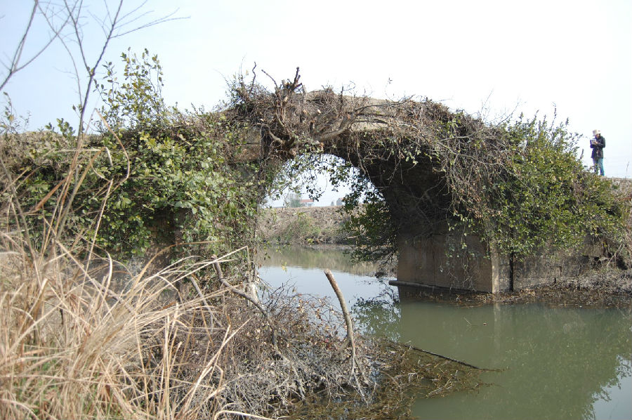

嘉兴市文物保护网 · 市级文物保护点 · 2020-11-03 · 原文

三建村环桥位于嘉兴市秀洲区王店镇三建村10组，根据村民回忆及桥的形制判断为清代建筑。东西横跨环桥港，系单孔无栏石拱桥，桥全长11.8米，桥面宽2.3米，落坡宽2.5米，略呈喇叭状。拱跨5.65米，矢高2.9米。桥面及两侧落坡石阶均被泥土淹没。环桥曾是当地村民出行的重要交通工具，是嘉兴地区现存为数不多的石拱桥之一，具有一定的历史文物价值和科学价值。2010年公布为嘉兴市级文保点。